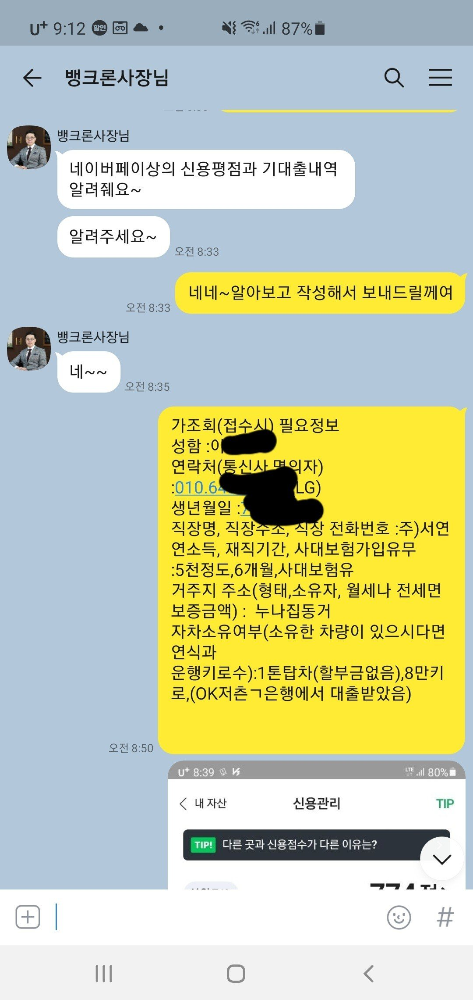
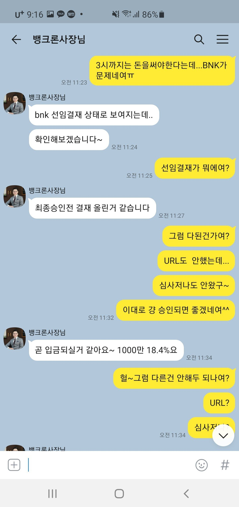
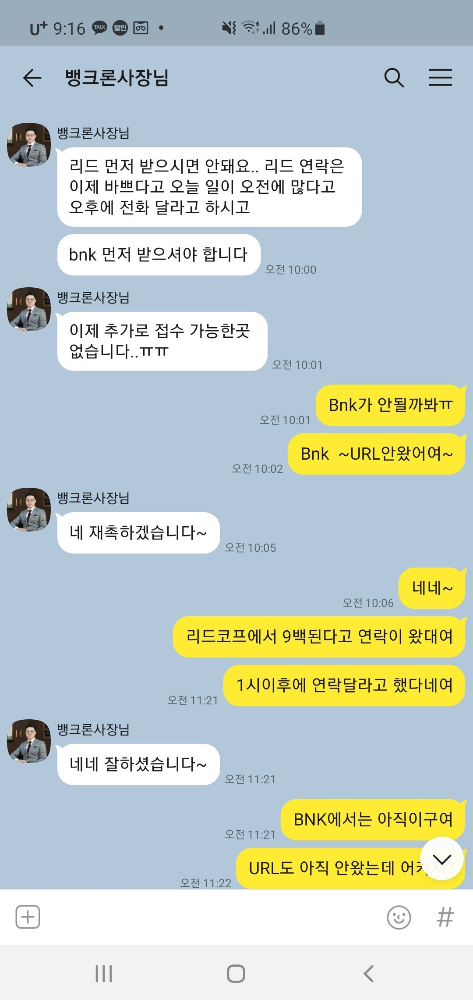
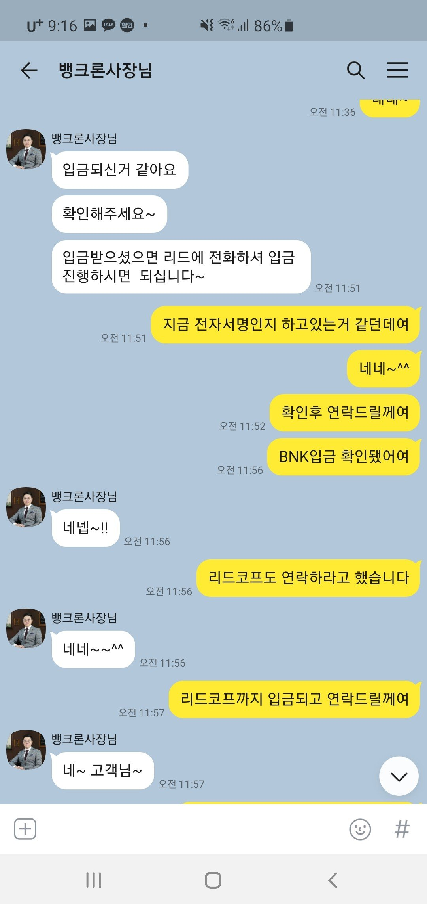

[기대출과다자] 김용혁이사님 감사합니다^^
*대출조건*
재직형태 ; 일용직
재직기간 ; 5개월
사대보험 ; 유
소 득 ; 연5천만원
신용점수 ; 744(네이버)
채무내역 ;현대캐피탈8백,한국2천가량,우리캐피탈6백,신한
은행8백,OK(차량담보)1,300백,카드론(2군데)
천만원
필요서류 ; 신분증,원초본,건강보험 득실확인서,건강보험
납부확인서



